APP Control¶
In this chapter, you will learn to use a APP - Sunfounder Controller to control the car.
The complete operation process is as follows：Install Sunfounder Controller -> Establish Communication -> Control the Car with APP.
You can check the About Sunfounder Controller and DIY Controller sections according to your choice.
Install Sunfounder Controller¶
Open App Store (iOS/Mac OS X system) or Play Store (Android/Windows/Linux system), then search and download Sunfounder Controller.

About Sunfounder Controller¶
Page Introduction¶
Start the Sunfounder Controller.

Click the middle button to add a new controller.

Sunfounder Controller is a platform that can add custom controllers. It reserves many widget interfaces. There are a total of 17 areas from A to Q. Each area has selectable widgets.
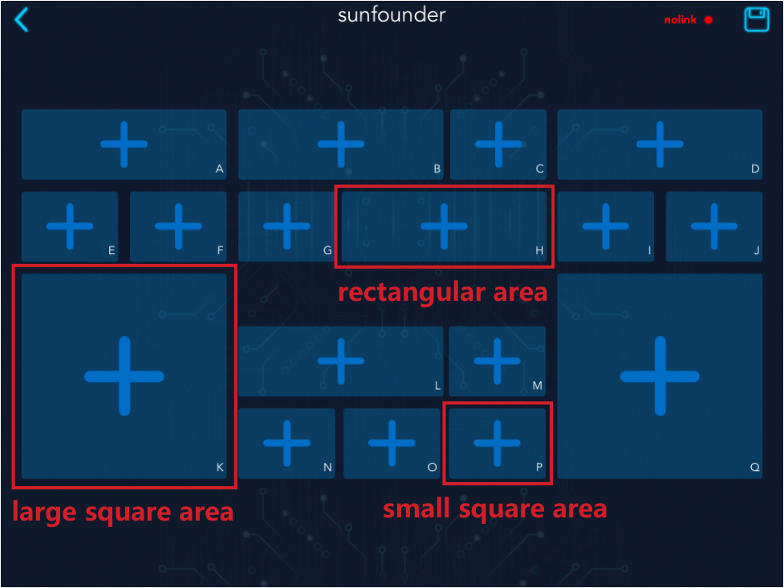{kind=link}
The available widgets in the large square area include joystick and D-Pad.
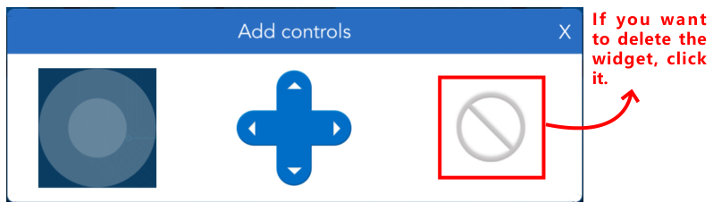{kind=link}
The available widgets in the small square area include button, digital display and switch.
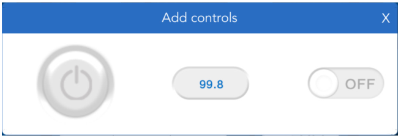{kind=link}
The available widgets for the rectangular area include slider, dial, ultrasonic radar and grayscale detection tool.

Widgets List¶
Here, you will learn the parameter types and ranges of control widgets and data widgets.
Control Widgets
The control widgets of Sunfounder Controller include buttons, switches, joystick, D-Pad, and slider.
You can modify the name, parameter range and initial value of some widgets by clicking the settings button in the upper right corner.
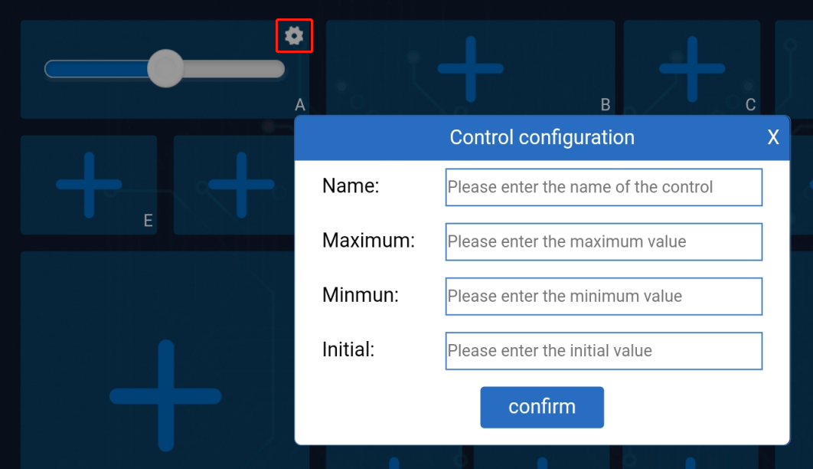{kind=link}
When we use these control widgets, proofreading information of the ESP-4WD car will receive the control data. Through these control data, we can write code to control the car.
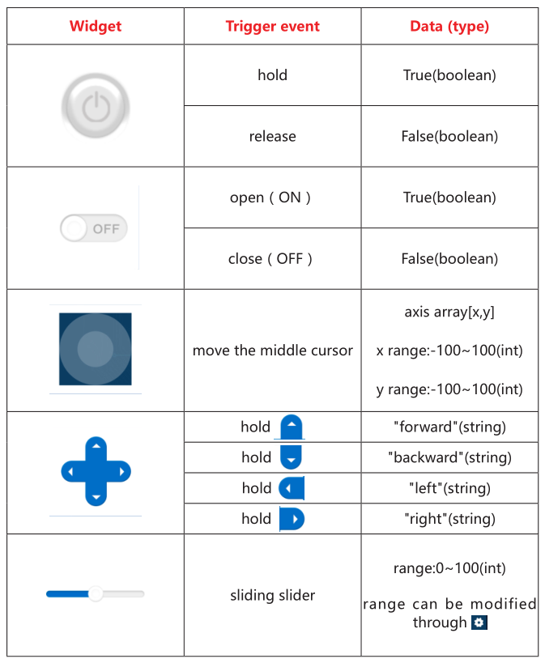{kind=link}
Data Widgets
The data widget of Sunfounder Controller includes digital displays, dial, ultrasonic radar, and grayscale detection tool.
When we send sensor data to these data widgets, we can show the data on the corresponding widgets. At the same time, you can also modify the name, unit and parameter range of the data widget by clicking the setting icon in the upper right corner.
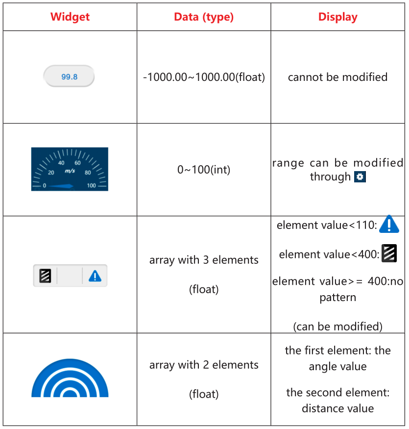{kind=link}
Establish Communication¶
There are two ways to establish communication between Sunfounder Controller and ESP-4WD car: One is AP mode, the other is STA mode.
AP Mode: You need to connect Sunfounder Contorller to the hotspot released by ESP-4WD car.
STA Mode: You need to connect Sunfounder Controller and ESP-4WD car to the same LAN.
We can switch the communication mode by modifying the code ws.py and defining the SWITCH_MODE variable as ap or sta.
SWITCH_MODE = "ap"
AP Mode¶
If you want to use AP mode, you need to connect Sunfounder Contorller to the hotspot released by ESP-4WD car.
Open the code
ws.py, modify the NAME and AP_PASSWORD to yours.
NAME = 'ESP-4WD Car' AP_PASSWORD = "123456789"
Note
The NAME in the code is both the SSID and the name of the car, if you have more than one EPS-4WD car, you need to set different NAMEs for them to avoid a wrong connection.
In addition, you need to set a password of more than 8 digits.
Then define the
SWITCH_MODEvariable asap.
SWITCH_MODE = "ap"
3. After downloading the code, ESP-4WD car will send a hotspot signal, then take out your mobile device, open the WLAN management interface and connect to the wifi network.
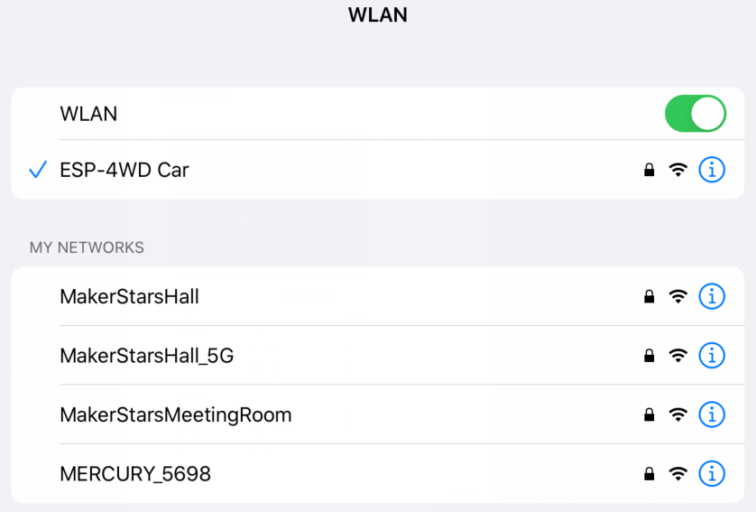{kind=link}
Open Sunfounder Controller and click the Connect icon on the top right corner.
{kind=link}
A prompt box will appear if the connection is successful.
{kind=link}
And the name of the car will be shown on APP.
{kind=link}
STA Mode¶
If you want to use STA mode, you need to connect Sunfounder Controller and ESP-4WD car to the same LAN.
Open the code
ws.py, modify the STA_NAME and STA_PASSWORD to yours.
STA_NAME = "MakerStarsHall" STA_PASSWORD = "sunfounder"
Then define the
SWITCH_MODEvariable assta.
SWITCH_MODE "sta"
3. After downloading the code, ESP-4WD car will automatically connect to the wifi network, and at the same time take out your mobile device, open the WLAN management interface and connect to this wifi network.
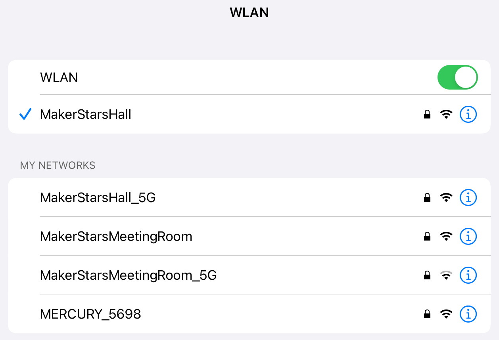{kind=link}
Open Sunfounder Controller and click the Connect icon on the top right corner.
Find the car name in the pop-up window and click on it.
{kind=link}
After connecting, the name of the car will be shown on APP.
Control the Car with APP¶
Either way, you can get the SunFounder Controller and ESP-4WD car to establish communication, next you will learn how to control the car with APP.
Open Sunfounder Controller, click the + to create an empty controller.
As shown in the figure, select the corresponding widget and click the icon in the upper right corner to save.
Widget A: Show the driving speed of the car.
Widget D: Simulate radar scanning.
Widget H: Control the driving speed of the car.
Widget K: Control the driving direction of the car.
Widget L: Show the detection result of the grayscale sensor.
Widget M: Control the on and off of the RGB board.
{kind=link}
Click the start button in the upper right corner, and then try to use these widgets to control ESP-4WD car.
{kind=link}
DIY Controller¶
If you want to DIY a new controller, you need to understand the communication process between the ESP-4WD car and the Sunfounder Controller. Open the
test_control.py file. You will go through this code to see how they communicate with each other.
Program framework¶
First, let us understand the general operating framework of the program.
Turn the code to line 34. In the main() function, we have written the basic
implementation code for build a controller.
ws.start(): Establish communication between ESP-4WD car and Sunfounder Controller.result = read(): Read the received data and store it in the result variable.write()：Send sensor data to Sunfounder Controller.
def main():
ws.start()
print("start")
while True:
result = read()
if result != None:
# coding the control function here.
# coding the sensor function here.
# ws.send_dict['L_region'] = car.get_grayscale_list() # example for test sensor date sending.
write()
time.sleep_ms(15)
Open the ws.py file, turn the code to line 87, in the start() function, we switch the
communication mode by judging the value of SWITCH_MODE .
def start(self):
if SWITCH_MODE == "ap":
self.wlan = network.WLAN(network.AP_IF)
self.wlan.config(essid=AP_NAME, authmode=4, password=AP_PASSWORD)
self.wlan.active(True) # turning on the hotspot
elif SWITCH_MODE == "sta":
self.wlan = network.WLAN(network.STA_IF)
self.wlan.active(True)
self.wlan.connect(STA_NAME, STA_PASSWORD)
Receiving¶
The ESP-4WD car receives data from the Sunfounder Controller and sends its own sensor data to the Sunfounder Controller. Let’s find out what data ESP-4WD car receives from Sunfounder Controller.
Step 1: Create new controller
Run the test_control.py file, re-establish communication, and then open Sunfounder Controller to create
a new controller. We add a slider in the H area and a D-Pad in the K area. After
adding, click the icon in the upper right corner to save.
{kind=link}
Step 2: Receive data from SunFounder Controller
Turn the code to line 14, in the read() function, we have realized the receiving and printing of the data sent by the Sunfounder Controller.
The function of the variable temp is to prevent repeated printing of data.
def read():
global temp
recv = ws.read()
if recv == None:
return
recv_data = json.loads(recv)
if temp != recv_data:
print("recv_data: %s\n"%recv_data)
temp = recv_data
return recv_data
Receive the Json object sent by Sunfounder Controller through the
ws.read()function and store it in therecvvariable.recv = ws.read()
The variable
recv(Json object format) is parsed intorecv_datadictionary through thejson.loads()function.recv_data = json.loads(recv)
Print the value of variable
recv_data.print("recv_data: %s\n"%recv_data)
Click the start icon in the upper right corner to run the controller.
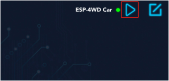Open the Shell window under Thonny, we can find that the initial data of K
control is the string stop, and the initial data of H widget is the int value 50.
{kind=link}
Press the arrow keys of the D-Pad in the K area and slide the slider in the H area.
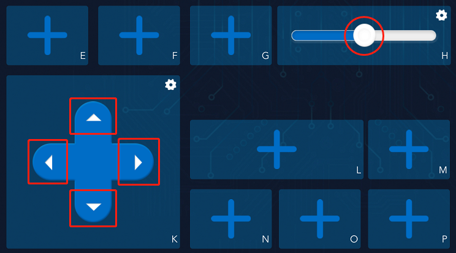{kind=link}
You can see that the D-Pad widget sends a string of data (“forward”, “backward”,”left”,”right”) to the ESP-4WD car, while the slider widget will send an int data (range: 0-100).
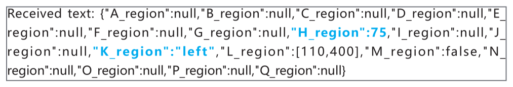{kind=link}
Step 3: Responding
When ESP-4WD car receives data from Sunfounder Controller, it needs to respond accordingly.
Let’s write a piece of code that uses the widgets on the Sunfounder Controller to control the movement of the car. The K widget(D-Pad) controls the direction of the car, and the H widget(slider) controls the speed of the car.
Add the following highlighted code to line 41 (a blank line).
def main():
ws.start()
print("start")
while True:
result = read()
if result != None:
# coding the control function here.
car.move(result['K_region'], result['H_region'])
# coding the sensor function here.
# ws.send_dict['L_region'] = car.get_grayscale_list() # example for test sensor date sending.
write()
time.sleep_ms(15)
Through the
read()function, you can receive the data sent by Sunfounder Controller and store it in the result dictionary.result = read()
Pass
result['K_region']as the first parameter to thecar.move()function to control the direction of the ESP-4WD car. Passresult['H_region']as the second parameter to thecar.move()function to control the speed.The value of
result['K_region']is the string data (“forward”, “backward”,”left”,”right”) sent by the K widget (D-Pad), the same as the value ofresult['H_region']is the int data sent by H widget (slide) (range: 0-100).car.move(result['K_region'], result['H_region'])
After save and run the modified code and re-establishing communication, open the controller and click the start icon in the upper right corner to run it.
The D-Pad in the K area can control the direction of the ESP-4WD car, and the slider in the H area can control the speed.
Sending¶
Let’s take a closer look at how the ESP-4WD car sends its own sensor data to the Sunfounder Controller.
Step 1: Create new controller
Open the test_control.py file and go to line 44, delete the comment symbol for this code.
This code is used to get the grey scale sensor data from the car.get_grayscale_list() function and store it in the ws.send_dict dictionary and define the key as L_region.
def main():
ws.start()
print("start")
while True:
result = read()
if result != None:
# coding the control function here.
# coding the sensor function here.
ws.send_dict['L_region'] = car.get_grayscale_list() # example for test sensor date sending.
write()
time.sleep_ms(15)
Save and run this code, re-establish communication, and then open Sunfounder Controller to create a new controller. We add a grayscale detection tool in the L area. After adding, click the icon in the upper right corner to save.
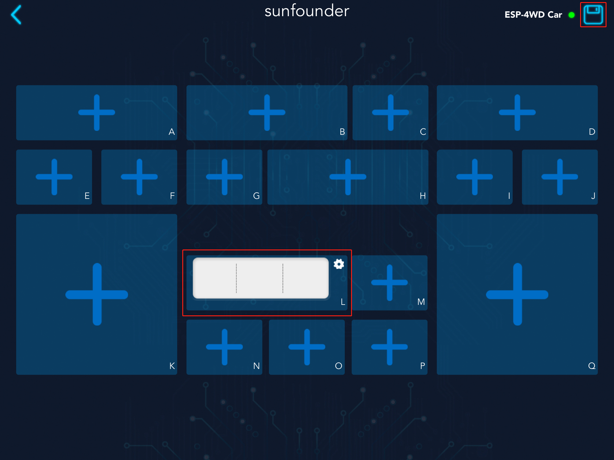{kind=link}
Step 2: Receive data from SunFounder Controller
Open the ws.py file and go to line 25. Here, the equipment information and proofreading
information of ESP-4WD Car are stored in the send_dict dictionary.
send_dict = {
'Name':AP_NAME,
'Type':'ESP-4WD Car',
'Check':'SunFounder Controller',
}
Open the test_control.py and go to line 26, through the write() function, we send sensor data to the Sunfounder Controller,
where the variable temp_send is used to prevent repeated printing of data.
def write():
global temp_send
ws.write(json.dumps(ws.send_dict))
if temp_send != ws.send_dict:
print("send_data:%s\n"%ws.send_dict)
temp_send = ws.send_dict.copy
return
First, use the
json.dumps()function to convert thews.send_dictdictionary into a Json object, and then use thews.write()function to send the Json object storing the sensor data to the Sunfounder Controller.ws.write(json.dumps(ws.send_dict))
Then print the value of the
ws.send_dict dictionary.print("send_data:%s\n"%ws.send_dict)
Click the start icon in the upper right corner to run the controller.
Open the Shell window under Thonny, you will see that the ESP-4WD car has been sending device information, calibration information and the value of the grayscale sensor to the Sunfounder Controller.
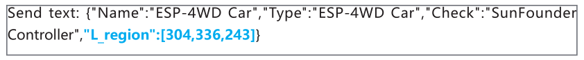{kind=link}
Step 3: Responding
Let’s write a piece of code that show the sensor data of Sunfounder Controller. Widget L (grayscale detection tool) will show you the grayscale of the ground.
Turn the code to line 34, Let’s re-explain the content of the main() event.
def main():
ws.start()
print("start")
while True:
result = read()
if result != None:
ws.send_dict['L_region'] = car.get_grayscale_list()
write()
time.sleep_ms(15)
By
car.get_grayscale_list()function, we can get the list of grayscale sensor detection values and assign them tows.send_dict['L_region'].ws.send_dict['L_region'] = car.get_grayscale_list()
Send sensor data, device information and proofreading information of the ESP-4WD car to Sunfounder Controller through
write()function.write()
Now, open the SunFounder Controller again, Widget D (grayscale detection tool) is showing the current ground conditions.
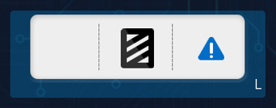